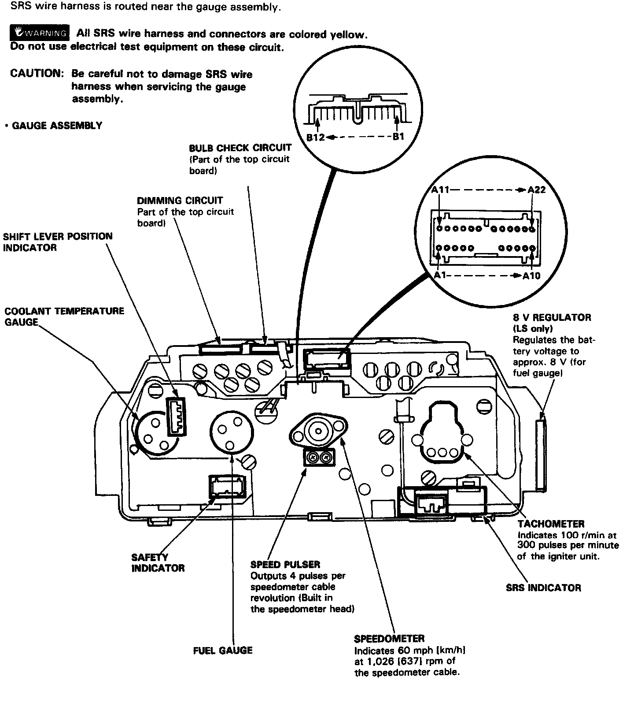
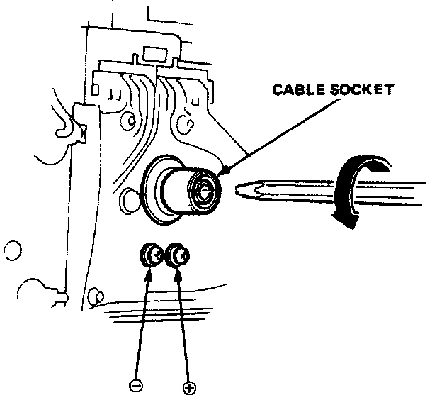

Speedometer Head: Testing and Inspection

SPEEDOMETER HEAD, CABLE OPERATED

Speed Pulser Test
1. Remove the gauge assembly from the dashboard, then turn it over.
2. Break the lead off a pencil tip, then insert the pencil into the speedometer connector socket and turn it. Connect an ohmmeter between the A and B terminals. There should be continuity 4 times between the A and B terminals per revolution.